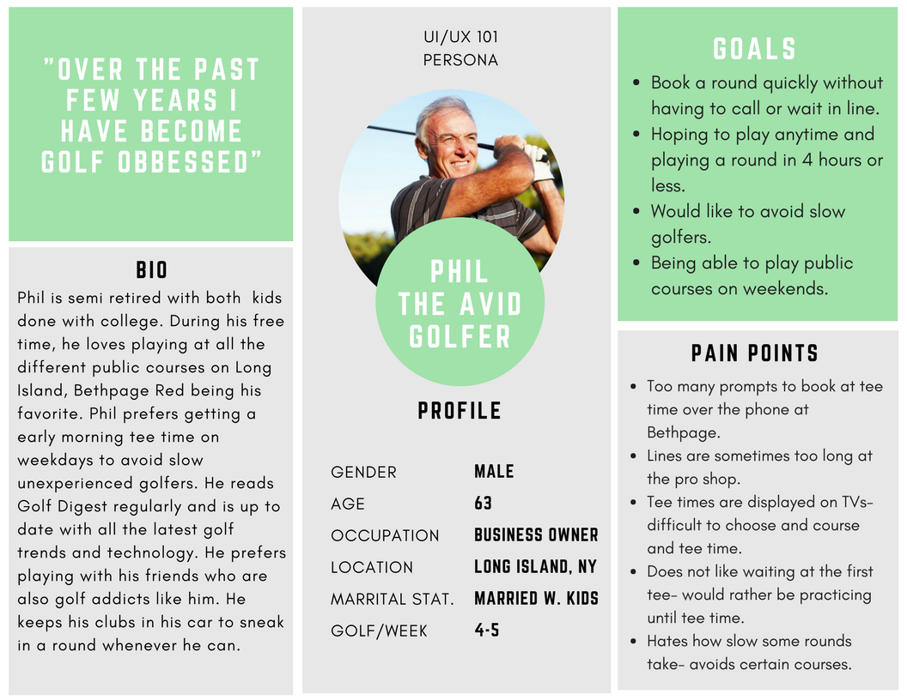
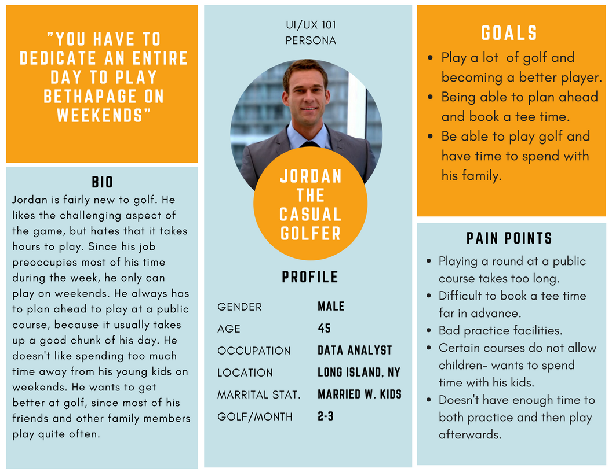
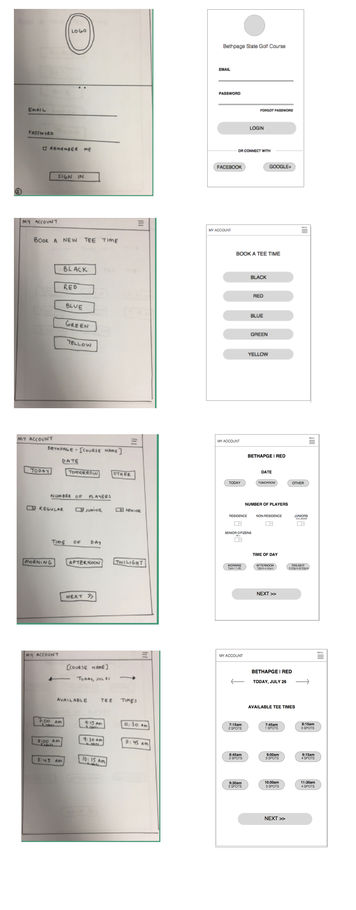

Bethpage State Golf Course is one of the most well known public golf courses in the US. Multiple PGA tournaments have been held here, attracting people from all over the world. Bethpage is an institutional golf course and has so much history, but its technology is still stuck in the past. Players have to call and go through a series of prompts to actually book a tee time, or they have to fax a form with all their information. On weekends theres long lines, and golfers do not have the ability to book a tee time in advance. There is a similar app on the market, GolfNow however none of the Bethapage Golf Courses are included. There was definitely a gap that needed to be filled between Bethpage and the golfers.
I interviewed about 15 people that were my initial target audience: Golfers who live on Long Island. I asked people about their golfing habits and their familiarity with technology. My goal was figure out the major pain points golfers faced when booking a tee time at Bethpage. I was able to come with two different personas that combined all the over arching answers each interviewee gave.
 After collecting all my data from interviews and looking at other golf tee time apps, I started mapping out the layout of each screen. I had created user flow diagrams to help determine the number of screens that I needed and the different screen pathways a user could encounter. My goal was to create a simple minimal layout, and not have too many steps to book a tee time. I then translated the pen and paper wireframes to lo-fi ones on sketch.
When it came to the visual design, I wanted the app to have a modern and sleek look. I took some inspiration from other golf related apps, such as GolfShot and GolfNow. Once the designs were completed conducted various usability tests at Bethpage State Golf Course. Users were asked to complete a series of tasks and I had someone take notes during each session. The sessions captured golfers navigational choices, task completion, comments, overall satisfaction ratings, questions and feedback. Based on feedback that was given was that the hamburger menu and the "My Account" link at the top of the screen were confusing. Users had a difficult time figuring out what each of those links actually did. Another concern that was brought up during the usability testing was that some users felt that there was too many steps on one screen, especially the screen were users had to select a day, time and number of players. The next iteration of my designs I decided to get rid of the navigation bar on the top of the screen, and created icons with labels on the bottom of the screen. The labels plus the icons eliminated the vague and confusing hamburger menu and "My Account" link, and having it on the bottom allowed for easy access. I also decided to separte each step into separate screens. At first, I felt that there would be too many steps, but after going through another round of usability testing, users felt that having one task per screen was easier to navigate.
During this process I realized its very important to design for your user and not yourself, and exhibit empathy. Some new features I plan on implementing in the near future are:
- Adding a feature where users can select 9/18 holes
- Condense the number of steps/screens
- Have a version for starters to keep track of each group
- Have a notification system if tee time is in 15 min/running late
I learned a lot from this project, and I'm excited to keep working on this project and it would be great if something like this could actually be impleted at Bethpage.